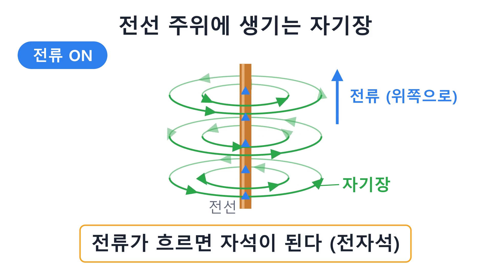
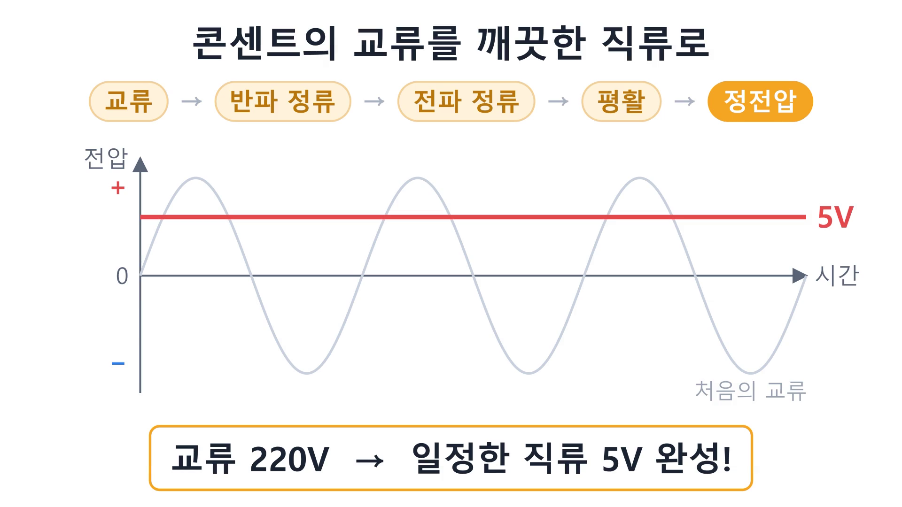
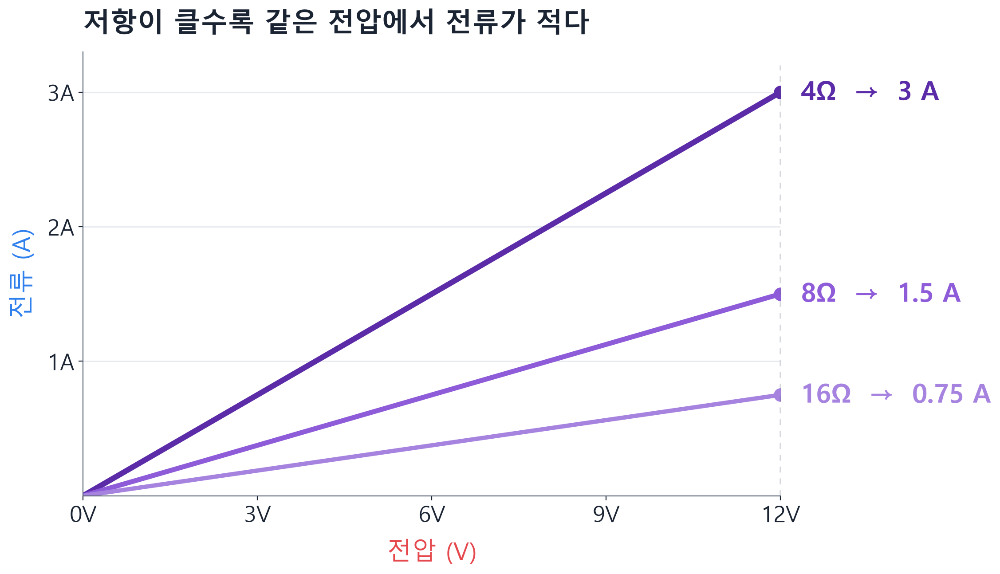

2강 · 프로젝트 10.12(2)
그림 많은 전자전기 기초 PPT 10강 자동으로 만들기
비전공자를 위한 전자전기 강의자료 10강, 슬라이드 118장. 원고는 YAML로 쓰고, 그림은 manim·matplotlib·생성형 AI가 나눠 그리고, 슬라이드는 명령 한 줄로 빌드합니다.
- Plan 모드로 폴더 구조와 파이프라인을 먼저 설계하는 법을 익힙니다.
- 그림 종류에 따라 도구를 나눠 쓰는 기준을 이해합니다.
- 서브에이전트로 큰 작업을 병렬로 나누는 방법을 봅니다.
- AI가 결과물을 이미지로 렌더해 스스로 검수하는 루프를 익힙니다.
1. 계획 세우기와 방향 수정
전자전기 기초 pptx 강의자료를 만들고 싶다 / 아무것도 모르는 비전공자 기준으로 / 그림 요소들이 많았으면 좋겠다 / 이에 필요한 폴더구조 계획 짜보자
Claude는 Plan 모드로 계획을 냈지만, 첫 안은 PPT 도형으로 그림을 그리는 방식이었습니다. 사용자는 바로 방향을 바꿨습니다.
SVG느낌이 도형으로 만드는것 (품질이 별로) / 그래프는 matplotlib이 정적이라서 manim 라이브러리랑 함께 쓰면 좋겠다 / 이미지 생성은 구글 플로우에서 해달라
이어서 Claude는 분량(8~10강), 강당 Flow 이미지 수(2장 내외, 총 22장), 약관 동의 여부를 하나씩 질문해 확정했습니다.
코드를 쓰기 전에 방향을 바꾸면 비용이 거의 들지 않습니다. 계획이 마음에 들지 않으면 이유를 구체적으로 말해 주세요. "품질이 별로"처럼 짧아도 충분합니다.
2. 폴더 구조와 도구 역할 분담
10.12(2)/
├─ content/ 강의 원고 (YAML, 강마다 1개)
├─ prompts/ Flow 이미지 프롬프트 (_style.md = 공통 화풍)
├─ images/ Flow 생성 일러스트
├─ charts/ matplotlib 그래프
├─ animations/ manim 소스(src)와 결과물(out)
├─ builder/ theme.py · layouts.py · build.py
├─ docs/ curriculum.md (강별 산출물 파일 이름까지 확정)
└─ output/ 최종 PPTX| 그림 종류 | 도구 | 이유 |
|---|---|---|
| 값의 관계를 보여주는 그래프 | matplotlib | 정확한 축과 수치 |
| 움직임으로 이해하는 원리 | manim | 전자 흐름, 자기장, 정류 과정을 애니메이션으로 |
| 분위기와 비유 일러스트 | Google Flow | 클레이 화풍의 친근한 그림. 글자는 넣지 않고 PPT에서 얹음 |
세 도구가 같은 색을 쓰도록 builder/theme.py 하나를 공유했습니다. 전압은 빨강, 전류는 파랑, 저항은 보라로 고정해 강의 전체에서 색의 의미가 같습니다.



manim 렌더를 한 줄로
렌더 래퍼 render.py가 고화질 렌더, 결과 복사, 포스터 PNG 추출을 한 번에 처리합니다.
python render.py lec01_electron_flow.py ElectronFlow lec01/electron_flow --poster 17
python render.py lec05_transformer.py Transformer lec05/transformer --still3. 맛보기 → 전체 제작
- 맛보기: "1단원 일부만 만들어서 보여줘"로 파이프라인 전체를 작게 한 번 돌려 봤습니다.
- Flow 이미지:
claude-in-chrome으로 Flow에 프롬프트를 넣고 생성 이미지를 내려받은 뒤import_flow.py로 webp → png 변환했습니다. 연속 다운로드 허용은 브라우저 권한이라 사용자가 직접 눌렀습니다. - 참고 교재 반영: "전기전자기초교재.ppt 이걸 참고해서 이제 전체를 만들어줘"
- 병렬 제작: 서브에이전트 3개에게 2~4강, 5~7강, 1·8~10강의 애니메이션과 그래프를 나눠 맡기고, 메인 Claude는 Flow 이미지와 YAML 원고를 썼습니다.
- 빌드: 레이아웃 13종(표지, 동영상, 공식, 퀴즈 등)으로 조립했습니다.
python builder/build.py all # 강별 PPTX 10개
python builder/build.py all --merged # 합본 (118장, 약 34MB)docs/curriculum.md에 강별 산출물 파일 이름을 미리 확정해 두었기 때문에, 세 서브에이전트가 따로 일해도 빌더가 결과물을 정확히 찾을 수 있었습니다.
4. 검수 루프: AI가 자기 결과물을 본다
슬라이드가 실제로 어떻게 보이는지는 파일만 봐서는 알 수 없습니다. Claude는 PowerPoint를 직접 조종해 슬라이드를 이미지로 내보낸 다음 그 이미지를 읽고 고쳤습니다.
$app = New-Object -ComObject PowerPoint.Application
$p = $app.Presentations.Open("...\01_전기란무엇인가.pptx")
$p.Slides(1).Export("...\slide01.png", "PNG", 1600, 900)이 과정에서 한글이 단어 중간에서 줄바꿈되는 문제("않/죠")를 발견했고, 테스트 슬라이드로 원인을 좁혀 해결했습니다.
5. 트러블슈팅
| 증상 | 해결 |
|---|---|
| 한글이 단어 중간에서 줄바꿈 | 텍스트 run마다 lang="ko-KR", 문단에 eaLnBrk="0"·latinLnBrk="0" 설정 |
참고 .ppt가 "컴퓨터 보호를 위해 열 수 없습니다" | 보안 설정은 건드리지 않고 olefile로 바이너리를 파싱해 텍스트 추출 (128장) |
YAML 파싱 오류 [부품, 특징, 어디에?] | "어디에?"처럼 따옴표로 감싸기 |
pip 명령 없음 | python -m pip install -r requirements.txt |
PowerShell .ps1 실행 차단 | 실행 정책은 바꾸지 않고 명령을 인라인으로 실행 |
| 그래프에서 마이너스 기호 "−"가 깨짐 | 폰트에 없는 글자라 "-"로 대체 |
| Chrome 스크린샷 30초 타임아웃 | 재시도하거나 javascript_tool로 DOM을 읽어 확인 |
PowerPoint의 보호 기능이나 PowerShell 실행 정책을 끄는 대신, 다른 방법(olefile 파싱, 인라인 실행)을 찾았습니다. 시스템 보안 설정 변경은 사람이 결정할 일입니다.
6. 정리
- 원고(YAML)와 디자인(theme·layouts)을 분리하면 내용만 고치고 한 줄로 다시 빌드할 수 있습니다.
- 그래프는 matplotlib, 원리는 manim, 일러스트는 생성형 AI. 글자는 PPT에 얹습니다.
- 렌더한 이미지를 AI가 직접 보고 고치는 검수 루프를 만듭니다.
- 파일 이름을 먼저 정하면 서브에이전트에게 안전하게 일을 나눌 수 있습니다.
- 약관, 다운로드 권한, 보안 설정은 사람이 결정합니다.
확인 퀴즈
Q1. Flow로 만드는 일러스트에 글자를 넣지 않은 이유는?
생성형 이미지의 글자는 자주 깨지고 고치기 어렵습니다. 글자는 PPT 텍스트로 얹어야 수정과 번역이 쉽습니다.
Q2. manim과 matplotlib을 함께 쓴 이유는?
matplotlib 그래프는 정적이라 "흐름"이나 "변화"를 보여 주기 어렵습니다. 움직임이 핵심인 원리는 manim 애니메이션으로 설명합니다.
Q3. 아직 확인하지 않은 부분은?
슬라이드는 정지 이미지로만 검수했습니다. 슬라이드쇼에서 동영상이 실제로 재생되는지는 사람이 직접 확인해야 합니다.